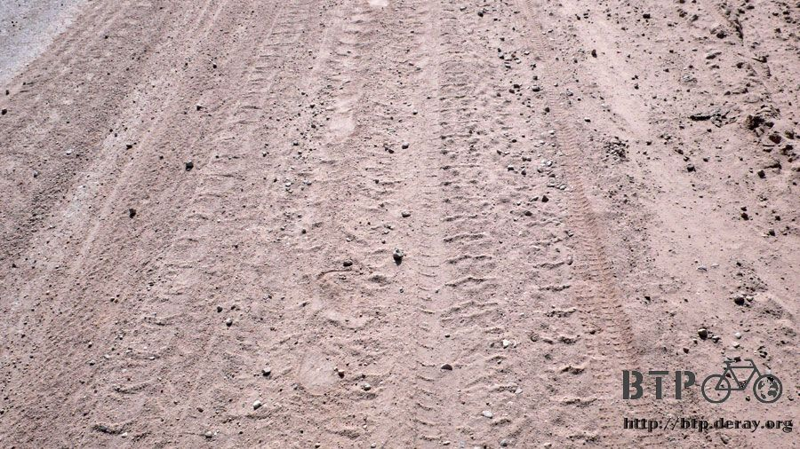

Natu： ~ Kayo Arai ~
As I was walking Dido out of the room, I saw a flat back tire.
How could it be flat; I haven’t even started to ride yet
It was fortunate that I noticed it in the room so it would be easier for me to fix it.
I took a closer look and saw that a piece of wire thinner then hair punctured the inner tube.
The hole was so small I didn’t notice when it happened, and after air leaking all night I got my second flat tire.
I wanted to try something different for breakfast this morning,
so I got some bread at 50 cents apiece. It looked sweet, more to my taste.
It tasted kind of like steamed sponge cake. I seem to be pretty good at choosing food
(or maybe it’s just because I’m not picky. =..=)

Following the road I came from, Lanzhou is only 110 km ahead.
If all goes well, I should be able to make it today, but that’s if all goes well…
Sure enough, this road disappeared not long after I left DingXi. There were two roads that diverged in a yellow wood.
I took the one less traveled by, only because there were bicycle tracks on the dirt road.
And that made all the difference.

After riding for about 10 km, as I was distracted; I heard someone say hello to me from the opposite lane in a very weird accent.
And that’s how I meat Natu, another bike traveler.
She was a Korean born in Japan, 28 years old.

Starting from Shanghai on March 19th, she took almost two months to get to where she is now, because she only rides 50 km a day.
When I first saw her, the first thought that passed my mind was ~
How did she do it with such little luggage?
Then, what does that make me look like with all this stuff? @@”
What made us the same was that we were both heading toward Lanzhou.
But, how could that be?
We’re on the same road, both going to Lanzhou,
then why is she coming from that way and I’m coming from this way? What is going on?
One of us must be going the wrong way. After asking a guy riding by on a motorcycle,
we found out that it was I who was going the wrong way. Orz
The guy said that we should turn back and go on the highway.
But…But can we really ride on the highway? @@”
And I only ended up here because I didn’t choose the highway at the diverged roads.
Maybe I should have took the road more traveled by after all.
Following the guy’s directions, we went to try our luck on the highway. But our luck ran out before even getting to the tollbooth. /_\
What on earth should we do now? We have already taken both roads,
there’s no other way to go; could turning back to DingXi be our only choice?

A traffic control fellow told us that there was this little path that we could take,
but it wouldn’t be easy. It was our only option, so we took it.
It was really a very small road, and because of going astray this morning, it was already high noon and I had only advanced 40 km.

I had lunch at a little town, sweet bean sauce noodles with beer.
The sun was at its highest; I would have got sunstroke if I hadn’t had something cool.
This was from Natu’s notebook, she is learning Mandarin and Chinese food as she travels:
“Eating is a way of learning” that’s what she said. =..=
When I thought the road was bad, it soon got worse. What we were riding on after lunch could barely be called a road.
It was just a dirt path going along the railway. ~_~
Would this really lead to Lanzhou?
I had my doubts, but we had no choice but to keep on going.

After following this path for a while, we came to the side gate of a train station.
OK, I guess we’re really lost now~
Since there’s not much we could do about it, why not take a break at the train station.
The staff at the train station were very friendly, we had fresh water and got to get out of the sun.
This was a very small station, no trains seemed to stop here, but the staff still greeted every train as it went by.

After resting for half an hour, we moved on.
The staff at the train station said that we would have to climb a mountain called High Cliff Mountain.
Just the sound of it was scary enough, but actually it was even more outrageous then that.

There were many places we had to walk our bikes through. Some slopes were over 35 degrees.
There was no way we could ride up. To add to that it was a dirt road covered with gravel.
Holding our bikes we climbed up this 2000m mountain, but when we got to the top, the view was absolutely spectacular.
This was an exclusive view for crazy bikers, and I stood and sucked it all in.
It moved me deeply.


Riding down the mountain brought us to a town called High Cliff Town.
I was riding in front of Natu, so I looked back once in a while to see if she was still there.
But when I looked back when I got to the town,
I DIDN’T SEE HER.
Worriedly, I rode back to see what might have happened.
It turned out that she had had a flat tire.
I thought that this shouldn’t be a big problem, because she has ridden around Japan two times before,
once in three months and once in one month.
A flat tire should be a piece of cake for her.
After all she has ridden from Shanghai to Lanzhou, then from there she was going to ride another five months.
Going from Lanzhou to Lhasa, then to Nepal, after that India, then to Thailand, and from Thailand to Hong Kong.
THAT’S QUITE A WAY TO RIDE.
She's got to be kidding if she didn’t bring any inner tubes or repair tools for her bike.
But that seemed to be the case.
SHE HAD BROUGHT NOTHING！！！！/_\
No wonder she had such little luggage. Trying to ride a journey like this without any supplements, that was really gambling with your life.
She already had two flat tires on this trip, fortunately both times happened in a city, and there are bike shops all over the place in China.
So she thought that there would be no problem finding someplace to fix her bike, and it was cheap too. She said an inner tube only cost 10 RMB.
But what I was worried about wasn’t the question of finding a shop or if it was cheap or not.
Rather, what if the bike broke down in the middle of nowhere; what could she do then?
Anyway, we walked her bike to a bike shop. The owner knew how to change it,
but he didn’t have the material (size 26C inner tube). He would have it tomorrow, he said.
So I gave her one of mine for the time being, and helped the owner change it.
Using our own inner tube, it only cost 3 RMB.
We found out that what caused the flat tire was not because something punctured it,
but because the lining inside of the frame was all worn out, and the inner tube was rubbing against the screws on the frame of the tire.
At a shop that doesn’t even have an inner tube, I guess asking if they could replace the lining was out of the question. I was right.
So we taped up the ruined lining, hoping that it would hold for a while.
Knowing that this wouldn't hold forever, we had to find a bigger bike shop that could replace it.
After this fix, it was already five o’clock, so we decided to call it a day at this Town of the High Cliff.
It was about 70 km from Lanzhou, so we should be able to get there by noon tomorrow.
There was only one very small hotel in town. With a record breaking price of 5 RMB a night,
up until now this was the cheapest hotel on this journey.
There was this little kid in the hotel,
He was four years old and had a red face like all the other kids around, taken care by his grandma.
They called him “Daka” (at least that’s what it sounded like ~_~).
He really enjoyed playing with Natu.
I don’t really know how to play with children so I gave him some candy that I bought two weeks before;
somehow was still there Then I lent him my sun cap.

Gansu is really a very dry place; there were no faucets in the hotel. All there were was a water vat to wash your face ：D
And, after you washed your face you shouldn’t just pour the water on the floor.
What you should do is to put the water into a bigger vat so that they could use it for irrigation.
I learned this the hard way, because when I poured the water on the floor,
the old lady at the hotel said to me in an anguished way that I shouldn’t have done that.
I’m sure every drop of water is precious here, because all the farms are covered with a transparent plastic cloth to prevent dehydration.
Natu was really a beer lover; she could ride with no supplements, but she would never forget to bring her bottle opener. XD
For dinner at this small town we had kung bao pork, beef noodles and vegetables.
Thanks to Natu, it was easier for me to take pictures today.
Actually it took me a long time to think about if I should put Natu in my travel notes.
Because many of you might think “Wow, an encounter with a beautiful woman”.
I had thought that maybe if I didn’t write about it that would save me some trouble,
but then I thought “nothing really happened, it was just two people meeting on the way. Why should I care what other people think.”
After Lanzhou, one was heading toward Sinkiang, and the other toward Tibet.
But we were both dreamers carrying out our dreams.

Photographed by: Natu. Her bike—Sakura Kuma (bearer of the cherry blossom)